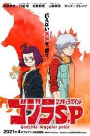
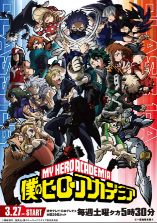
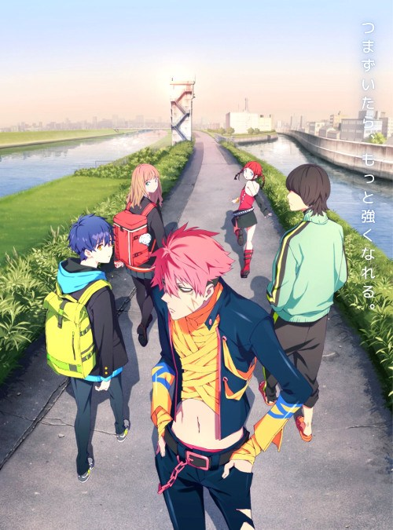
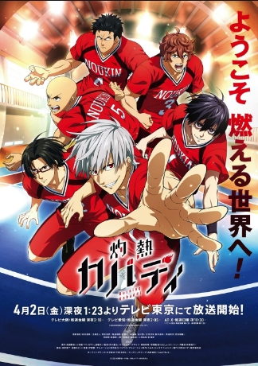
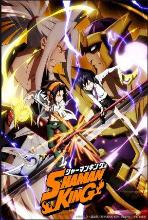
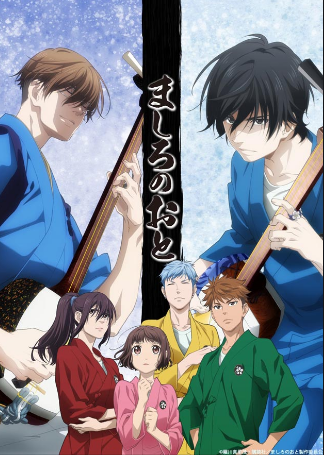
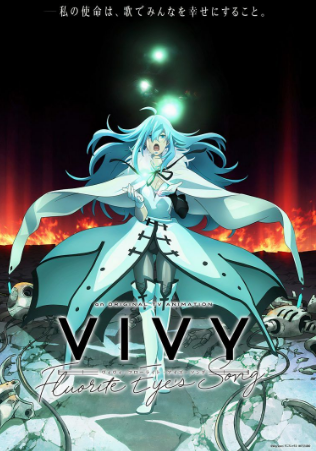
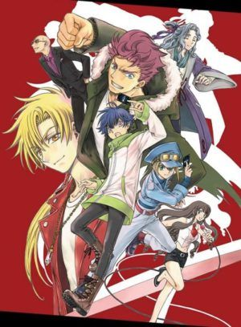
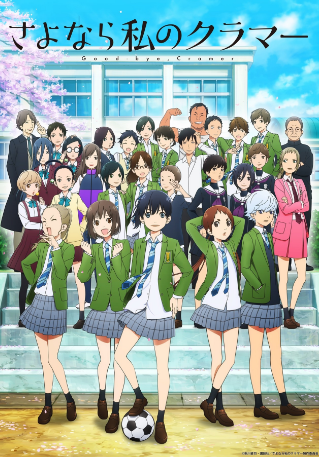

HOLA!! familiaaa ¿como estan? espero que bien, bueno esta es la nueva pagina y seccion de Anime para la familia
bueno, como se habran dado cuenta al ser una nueva version debe tener cosas nuevas ¿no? en el canal de youtube estare
subiendo sobre lo que se podra hacer y lo que estare desarrollando en la pagina, de momento seguiran siendo gameplays
tambien habra nuevos contenidos, dejare la pagina de fb donde subire toda la informacion sobre los fan'sart's hechos
por ustedes, obviamente tambien habra nuevas colaboraciones, cambios en la imagen del perfil dentro de unos meses ^.^
y bueno he aqui los animes de la temporada primavera 2021 UwU
(al dar clic en la imagen del anime los mandara al tio flv
donde podran ver el primer capitulo del anime ).
al final de les dejare el link para poder descargar LA tanto para pc como para android.(al pasar por cada imagen puedes
dar clic en algunas para poder ver el primer capitulo del anime, algunos no encontre en ningun lado el anime, por lo que
recomiendo que descargen LA:legionanime, para poder verlos, esto solo es en esta pagina de inicio, ya que en las
recoemndaciones estan todos los animes en animeflv)
en primer lugar tenemosss..... (musica de suspenso porfavor) !A GODZILLA, CLARO QUE SI, YA TIENE PELICULAS
SOLO LE FALTABA ANIME JAJAJAJAJA ok no godzilla SP

Esta serie presenta una historia original, que muestra a los jóvenes genios Mei Kamino, una investigadora, y Yun Arikawa,
un ingeniero, mientras asumen una amenaza sin precedentes con sus compañeros. ¡Cuando el peligro surge de las profundidades,
solo los jóvenes genios Mei, Yun y su equipo pueden enfrentar la amenaza en Godzilla Singular Point!
(de este solo esta en LA al parecer el tio flv no tiene permiso sobre esta serie UnU)
en segundo lugar tenemosss.... boku no hero academy 5ta temporada

pues, que puedo decir, es la aquinta temporada de mi rodilla, digo.. midoriya, ya saben de que va.
en tercer lugar tenemosss...... ssss.dynazenon

bueno, no lo he visto, pero... nah la verdad no tenog ni idea de que tan bueno este.
en cuarto lugar tenemosss....... shakunetsu

El estudiante de primer año de secundaria Tatsuya Yoigoshi, el ex as de un equipo de fútbol de la escuela secundaria
al que no le gustan los deportes, recibe una invitación para unirse al club Kabaddi. Inicialmente burlándose de la idea
de Kabaddi, se interesa después de ver una intensa competencia similar a las artes marciales en una sesión de práctica.
en quinto lugar tenemosss....... shamank king

Una batalla está a punto de comenzar en Tokio: la Batalla de Chamanes, una competencia que se realiza cada quinientos
años en donde los Chamanes (aquellos que pueden comandar espíritus) se confrontan entre sí. Aquel que resulte victorioso
en este torneo será reconocido como el “Shaman King” y podrá contactar y controlar al Gran Espíritu, permitiéndole reformar
el mundo a su voluntad a través de su inmenso poder. Durante una caminata nocturna, Manta Oyamada se encuentra con su compañero,
el despreocupado Yoh Asakura, quien lo invita a mirar las estrellas con otros amigos quienes, para el horror de Manta, resultan
ser los fantasmas del cementerio local. Sin embargo, resulta sorprendente también que Manta sea capaz de verlos.
en sexto lugar tenemosss....... mashiro no oto

Shamisen es un instrumento musical tradicional japonés que se parece a una guitarra. El abuelo del adolescente Sawamura
Setsu que lo crió a él y a su hermano mayor Wakana, falleció recientemente. Su abuelo fue uno de los mejores intérpretes de
Shamisen y los dos hermanos crecieron escuchándolo tocar y aprendiendo a tocar el instrumento.
Desde la muerte de su abuelo, Setsu abandonó la escuela secundaria, se mudó a Tokio y ha estado a la deriva, sin saber qué hacer
además de jugar su Shamisen. Ahí es cuando su exitosa y rica madre, Umeko, irrumpe en su vida e intenta darle forma a Setsu. Ella lo
inscribe de nuevo en la escuela secundaria, pero Setsu no sabe que está a punto de redescubrir su pasión por Shamisen.
bueno... es como shigatsu wa kimi no uso pero con un ending feliz, esta vez los protas no moriran... o eso espero.
en septimo lugar tenemosss...... vivy flourite eyes song

Nierland: un complejo parque temático de inteligencia artificial donde los sueños, las esperanzas y la ciencia se entremezclan.
Creada como la primera IA humanoide autónoma de la historia, Vivy actúa como un elenco de IA para el establecimiento. Para cumplir
con su misión de hacer felices a todos a través de las canciones, continúa subiendo al escenario y actuando con todo su corazón. Sin
embargo, el parque temático todavía carecía de popularidad.
Un día, un A.I llamado Matsumoto aparece ante Vivy y explica que ha viajado desde 100 años hacia el futuro, con la misión de corregir la historia
con Vivy y prevenir la guerra entre A.I y la humanidad que tendrá lugar 100 años después.
¿Qué tipo de futuro redibujará el encuentro de dos IA con misiones diferentes? Esta es la historia de A.I destruyendo A.I. Comienza el viaje de 100 años de A.I diva Vivy.
...memorie plastics? no se, me recordo bastante a la robot de memorie plastics.(tampoco lo tiene animeflv)
en octavo lugar teenmosss....... Cardfight Vanguard over dress

Yu-yu es un niño que vive en Kanazawa, provincia de Kaga. Tiene 15 años y está en su tercer año de secundaria. Tiene la capacidad de sentir los sentimientos de los demás, pero
le preocupa el hecho de que no puede decir que no cuando se le pregunta.
Un día, Yu-yu ya no pudo soportar más el pasatiempo de su hermana, así que se escapó de casa. Quien lo salva es Megumi Okura. Megumi invita a Yu-yu a un parque de atracciones nocturno
llamado "Wonder Hill" donde pasan el rato sus amigos. En el parque de atracciones, Yu-yu conoce a Megumi, Zakusa Ishikame y Tomari Seto, miembros del "Team Blackout", un grupo que se reúne
para jugar Vanguard todas las noches.
Esta noche se llevará a cabo una pelea seria por la bandera del equipo. El líder de Blackout, Danji Momoyama, y el misterioso y poderoso luchador, Touya Ebata. Mientras Yu-yu los mira, la pelea
de cartas pronto se erosiona en un mundo de imágenes.
Así es como Yu-yu se encuentra con Vanguard, un mundo que nunca había visto antes, y se ve atraído por su poderoso atractivo, haciendo nuevos amigos en el camino.
(tampoco lo tiene animeflv)
en noveno lugar tenemosss...... sayonara watashi no cramer

historia del dia:
prota(shin): bueno angel, entonces iremos a la universidad de hakuu para ver que carrera sera la que eligiremos
(novia del prota)angel: sips entonces dame tu mano, para no perderme
shin: tienes 19, no te perderas
angel: haa... esta bien >:3
horas despues
shin: mira, esta la carrera de cocina
angel: entraremos juntos?
shin: nose... a decir verdad no quiero entrar a la primera que vea, esperare a ver que mas hay
si quieres entrar tu, es posible que yo tambien entre, somos uno mismo, recuerdas?
angel: siiii
shin: bien entonces has el cardex de entrega.
angel: vooooy
shin:~ahora... a que carrera entrare... no quiero volver a ser el mismo
angel: listoo, ya entrege los documentos, ya decidiste?
shin: no, la verdad es que no
angel: entonces, vamos a comer?
shin: si vamos
angel: oye... si entras a una distinta... sabes que estare ahi para ti, cierto?
no volveras a estar solo, no mientras este contigo
shin: bueno, justo por eso estoy pensando a que carrera entrare.
angel: pues decide pronto, sera dentro de dos dias el ingreso
shin: si, el ultimo dia que elija sera el dia de ingreso
angel:entonces esperare hasta entonces
shin: si, sera una espera que valdra la pena.
el dia de ingreso
angel: cieloooo, date prisa, llegaremos tarde
shin: voy, voy
angel: ten cuidado cuando estes paseando por la universidad, me perteneces
shin: si, si, lo que digas, zancudo empalagoso, suerte en tu primer dia
angel: gracias, fuente de azucar escandaloso
angel: buenas tardes maestro
(maestro) kanu: buenas
(supervisor) adal: kanu, esos son todos los alumnos, los dejo en sus manos,
dentro de unos momentos llegara mariela (la mujer mas importante dentro del mundo gourmet)
kanu: esa mujer me pone los nervios de punta, bien, entonces nos vemos despues.
adal: hasta luego
kanu: bien, estudiantes, yo sere su unico maestro, y la verdad no sere bueno, no esperen
que los ayude en algun momento durante las clases, porque solo son perdidas de tiempo
en estos momentos ustedes son unos pequeños bebes que no saben nada, pero no se preocupen
solo pasaran los que de verdad sepan poder seguirme el paso, y estoy seguro que
esta primera semana muchos se saldran de la carrera porque ninguno de ustedes
sabe nada sobre la cocina, simplemente no hay nadie que pueda cocinar
por eso yo les enseñare para que minimo puedan preparar algo decente
trabajaran por parejas, al final del dia me mostraran sus resultados,
tendremos 4hrs de teoria las primeras clases y 2 hrs de practica hasta nuevo aviso
si alguien quiere arriesgarse a perder su carrera puede desafiarme el riesgo es alto,
al igual que las ganancias, pero ninguno de ustedes podra hacer algo bola d-
angel: yoooo
kanu: tu que niña?!
angel: yo quiero arriesgarme al exito, y como dijo que sera en parejas-
kanu: yo nunca dije que seria en parejas
angel: entonces despues de decir algo te contradices simplemente para que
no te humillen?
kanu: eres bastante maleducada, te lo han dicho?
angel: la personas que sera mi ayudante durante este reto me lo dice todos los dias todo el dia
kanu: bien entonces mañana sera la prueba entre ustedes dos contra mi
angel: ~sonrisita macabra
despues de clases
shin: hola angel como t-
angel: ya te meti en mi carrera, siiii
shin: ahora que hiciste?
angel: vamos a cenar y te lo contare
shin: que hiciste que sin avisarme!!!
angel: vamos, es solo un reto, o te da miedo?
shin: ahh... quien carajos dijo que tenia miedo?
a pesar de que estoy enojado contigo no puedo evitar emocionarme
angel: la prueba sera mañana asi que habra qe ensayar el timepo que tenemos
shin: ah... si, sera bastante duro para ser un tema libre
alguien mas tiene el presentimiento que sera una aventura bastante larga?